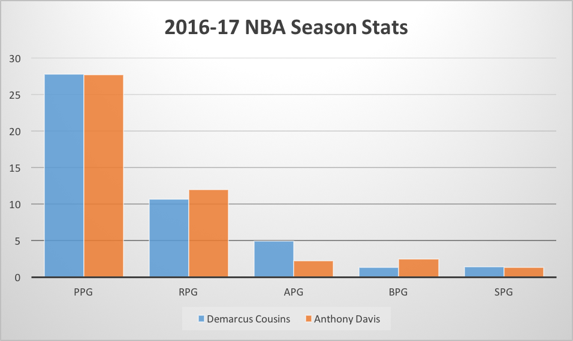

Can Cousins Lead the Pelicans to an NBA Title?
By Sandeep Tiwari | March 1, 2017

Not too long ago, centers were the most dominant players in the NBA. Wilt, Russell, Hakeem, Shaq, Kareem, Duncan, to name a few, were all the best players on NBA championship winning teams. However, in recent years, we’ve seen championship teams built on the shoulders of guards and forwards. From 2006 to 2016, the only Finals MVP who was a big man was Dirk Nowitski, a man who was really nothing like the dominant big men of old, and instead, found his success through a perimeter style of play. However, with the recent news that Demarcus Cousins is going to be paired up with Anthony Davis, it looks like things might change, and they might change fast.
The rest of the NBA should now be terrified of the New Orleans Pelicans, as the two best big men currently in the NBA are now on the same team. The Pelicans now have Davis and Cousins in their primes, which should strike fear into every NBA team. This is the first time since 1999, when Tim Duncan and David Robinson were on the same Spurs team that won the NBA championship, that two Hall of Fame big men have teamed up together in their primes. But even then, Duncan was only 22, and Robinson was 33 years old. Their windows were very short together because Robinson was aging. As for the Pelicans right now, Demarcus is 26, and Davis is only 23. For the next 5 years, the Pelicans should be set, as both of these All-Stars have established themselves as absolutely monstrous forces who are not only perfect for the current NBA, but also have styles which complement each other perfectly. This is because in today’s game, court spacing is crucial, and if you don’t have a team that can spread the court and guard multiple positions, you won’t find much success. Luckily for the Pelicans, both men can shoot, becoming real threats from the outside, and of course, they can post up and score around the basket with great efficiency. With that said, they do have different styles, but it seems as though these styles will mesh together seamlessly. Cousins is the kind of player who can run an offense, and even though he can score at a high rate, he is one of the best passing big men in the league. Since 2007, only three centers have averaged over 4.5 APG: Cousins, Al Horford, and Joakim Noah. Meanwhile, Anthony Davis has established himself as one of the greatest defensive players in the game. He is the only power forward since 2007 who has averaged over 2.5 blocks and 1.3 steals in a season, doing it three times since he was drafted. Therefore, these guys have established that they are the perfect 4-5 combo to play in this new style of basketball.
The Pelicans now have an incredible do-it-all passing big and an other-worldly do-it-all defensive force. The figure to the right shows the insane stats these men have been putting up this season.
This season, Cousins is currently averaging 27.8 points. 10.7 rebounds, 4.9 assists, 1.4 steals, and 1.3 blocks per game. In the entirety of the league’s history, only three other players have averaged at least 27 points, 10.5 rebounds, 4.5 assists, and 1.3 steals in a season; those players are NBA legends: Larry Bird, Kareem Abdul-Jabbar, and David Robinson. Cousins is now on track to join this elite club. However, this isn’t surprising as, in the last three seasons, Cousins has averaged 26.2 points, 11.6 rebounds, 3.9 assists, 1.5 steals, and 1.5 blocks. Only him and Kareem have put up those sorts of numbers between their third to fifth seasons. This means that Cousins is a legitimate superstar who should clearly be capable of leading a team to a championship, with him as the team’s best player.
But the frightening thing here is that Anthony Davis has also proven himself to be on the path to all-time greatness. This season, Davis is averaging 27.7 points, 12 rebounds, 2.2 assists, 1.3 steals, and 2.5 blocks per game. The only players to put up Davis’ kind of stat line in a season are Hakeem Olajuwon and Kareem Abdul-Jabbar. Once again, this is unsurprising as Davis has been doing this since he joined the league in 2012. He has been an All-Star for the last four years, and for the last three years, he has averaged 25.3 points, 10.8 rebounds, 2.1 assists, 1.4 steals, and 2.5 blocks. The 23-year old Davis is the only player to average these kinds of numbers within his first five seasons in the NBA. This means that the combination of these two superstars is completely unprecedented, because both of these guys are doing things that have only been done by a few of the best big men to ever play.
In case you’re reading this and still aren’t convinced, let’s take a look at their per 100 possession numbers, a stat that shows how much a player would produce per 100 possessions of a game. There are only two players who have ever put up per 100 numbers of 37 points, 15.5 rebounds, 1.5 steals, and 1.5 blocks in a single season, and those two men are Anthony Davis and Demarcus Cousins, who now play on the same team.
Even without Demarcus Cousins, New Orleans has quietly become a better player than most people realize. Their defense has already proven to be solid as they rank top 10 in the league in terms of defensive efficiency. The addition of Cousins should bolster this above average defense. From 2014 to 2016, the Kings were a much better defensive team when Cousins was on the floor. This season, he has regressed defensively, but we can obviously point to the toxic environment in Sacramento and the huge offensive load he has been forced to carry night in and night out as an understandable explanation for that slip. In a new city, playing with another star who can relieve him of some of the burden, we can expect Cousins to return to his original defensive form. However, what has really been the major area of concern for the Pelicans has been their offense. Right now, they rank 27th in the league in offensive efficiency, but we can expect this stat to improve drastically with the arrival of Cousins.
However, for the Pelicans to become a championship team, they will also need to recruit new talent to surround Davis and Cousins. The good news is that they already have a player who seems like a great building block for their future, Jrue Holiday. Although his first three years in New Orleans were plagued by injury, this season, he has returned to near All-Star form. He is a good third player to pair with two transcendent big men. Plus, he’s only 26 years old and is just entering his prime. Additionally, over the next two summers, Chris Paul and Paul George will be entering free-agency and if the Pelicans can land either of those guys and fill the rest of their team with quality players, they might end up having a potential dynasty. This season, the Pelicans are just 2.5 games off of the 8th seed in the Western Conference. If Cousins and Davis can lead the Pelicans to a strong finish, we might find ourselves watching one of the most entertaining first-round matchups the NBA playoffs have ever seen. If this takes shape, the big question is whether or not the Warriors, who start Zaza Pachulia at center, will be able to stop two of the best big men in the NBA right now.